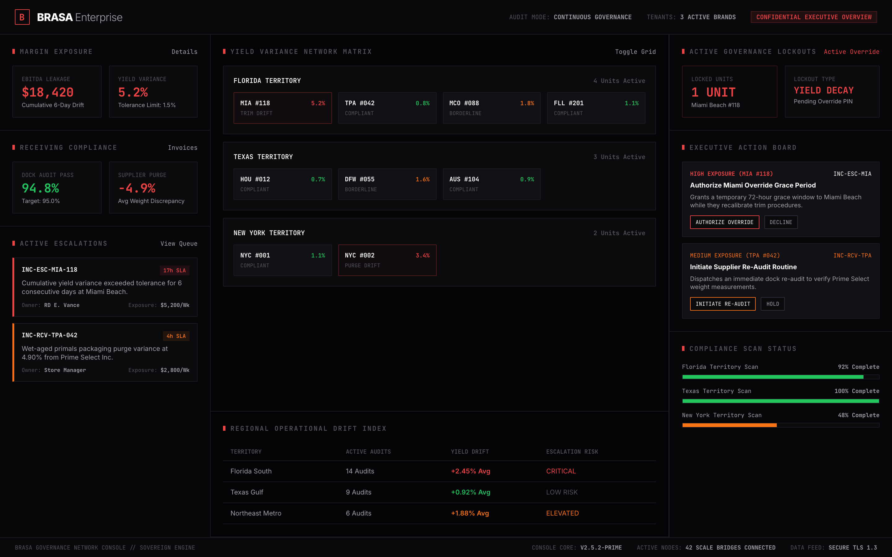
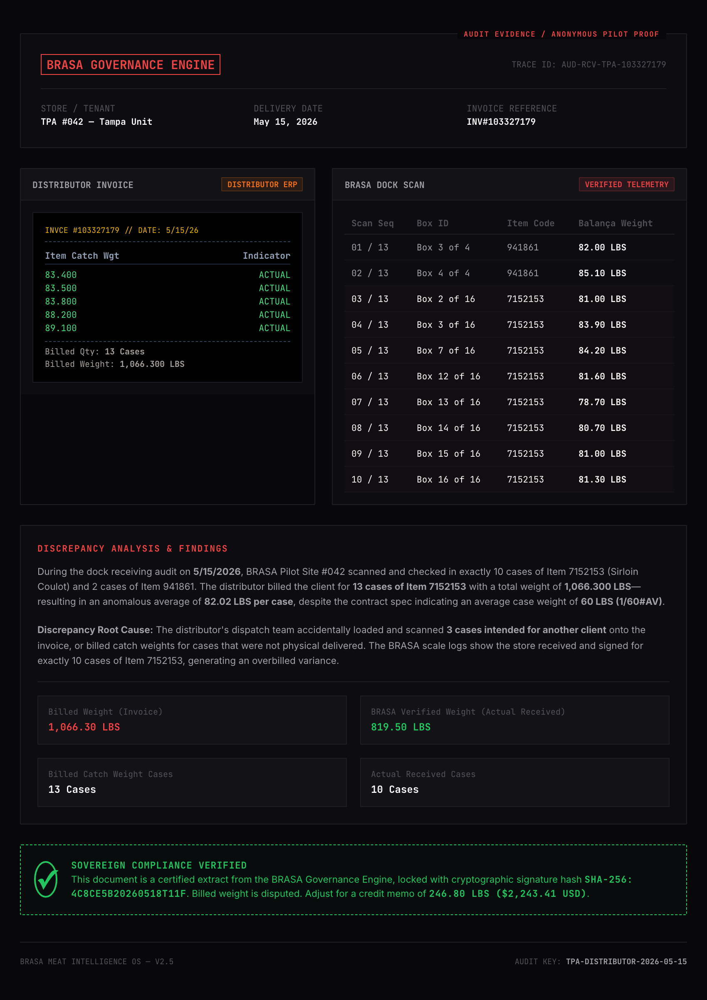
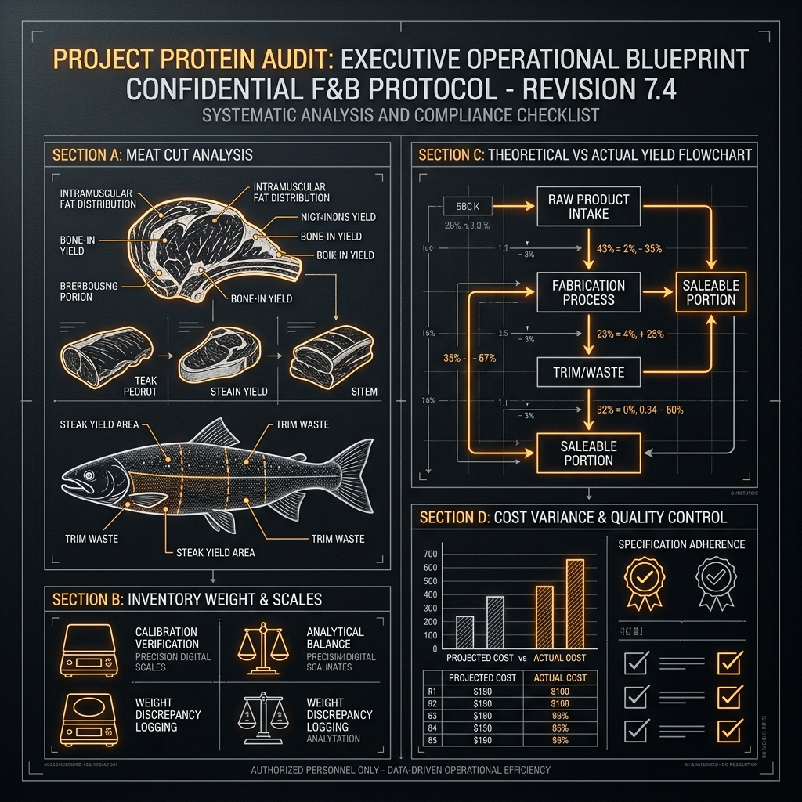

Most inventory software assumes that a sub-primal ribeye behaves like a box of paper cups.
It does not.
Paper cups are static units.
They do not lose weight during transit.
They do not purge moisture.
They do not vary in structural yield based on muscle composition or fat-cap trim.
Premium beef does.
Yet many multi-unit operators still manage millions of dollars in protein using inventory logic built for dry goods.
That creates a dangerous operational blind spot.
A USDA strip loin is not a static SKU.
It is a biological asset with dynamic yield behavior.
If your receiving process only validates invoice weight and box count, you are operating blind.
And when portion variance finally appears in the P&L, the kitchen often gets blamed for a problem that actually started days earlier at the loading dock.
Biological inventory requires dynamic yield modeling.
If your system treats protein as a static SKU, you are not managing inventory.
You are managing accounting fiction.
✓ Copied to clipboard
Focus CategoryEBITDA Compound Leaks
SLA Metric CodeOP-EBITDA-022
02. Yield Drift

In a single-unit restaurant, a 2.5% yield variance on beef tenderloin looks like a localized operational nuisance.
At 40 high-volume units, that same 2.5% variance becomes an EBITDA problem.
The danger of yield drift is that it rarely appears as one dramatic operational failure.
It compounds silently:
• excessive trim
• poor butcher calibration
• inconsistent prep execution
• untracked fabrication loss
One store processing 8,000 pounds of premium beef per week can quietly lose thousands of dollars in margin through small daily variances.
Across an entire network, that operational drift scales into millions in annual leakage.
And by the time it becomes visible in a monthly P&L review, the capital has already left the building.
Multi-unit operators do not need more reports.
They need continuous operational governance:
• real-time yield visibility
• receiving accountability
• variance escalation
• digital tolerance enforcement
At scale, the difference between an average operator and an elite operator is not the concept.
It is the control over the decimal places.
✓ Copied to clipboard
Focus CategoryDock-to-Butcher Telemetry & Case Study
SLA Metric CodeOP-GOV-033
03. The Governance Gap

The loading dock and the butcher table are often treated as two separate operational islands.
This is the governance gap.
At the dock, the process focuses on invoices, purchase orders, and box counts.
At the butcher table, the focus shifts to speed, prep execution, and presentation.
But if there is no direct operational trace connecting the inbound weight of a specific lot to the final portion yield, your control system is broken.
That is where margin leakage hides.
A supplier can consistently ship heavier fat caps or higher moisture retention, and the operation may never detect it.
The receiver accepts the shipment because the invoice matches.
The butcher trims to specification.
The excess loss disappears into “kitchen waste.”
The supplier avoids accountability.
The kitchen absorbs the blame.
To close this gap, operators need traceability between:
• receiving weight
• trim loss
• fabrication yield
• final portion output
If you cannot connect your dock scales to your butcher tables, you are not running a controlled supply chain.
You are running a series of expensive assumptions.
✓ Copied to clipboard
Focus CategoryP&L Illusion & Revenue Shields
SLA Metric CodeOP-FIN-044
04. The Illusion of a Healthy P&L
A strong P&L is often the ultimate shield for operational problems.
When sales are high and food cost percentages remain within target, most organizations stop asking deeper questions.
But a healthy P&L can hide severe operational drift.
High-volume steakhouses can absorb:
• receiving discrepancies
• specification inconsistencies
• excessive trim loss
• prep inefficiency
• unmanaged yield decay
… without immediately triggering financial alarms.
That is what makes operational leakage dangerous.
The problem stays hidden while revenue is strong.
And when sales eventually soften, the underlying weaknesses suddenly become margin crises.
The role of operational leadership is not simply to review financial reports that are already thirty days old.
It is to audit the integrity of the operational systems generating those numbers in real time.
A high-performing store should not be exempt from governance simply because top-line revenue is healthy.
Operational excellence is not validated by sales volume alone.
It is validated by the integrity of the execution underneath it.
✓ Copied to clipboard
Focus CategoryTheoretical Cost vs. Floor Reality
SLA Metric CodeOP-EXEC-055
05. Theoretical Food Cost

Your guests do not eat theoretical food cost.
They eat operational reality.
Every corporate office has a spreadsheet projecting theoretical yield, theoretical portion cost, and theoretical margin performance.
But kitchens do not operate in theoretical conditions.
Actual yield is influenced every day by:
• knife skill
• protein age
• trim discipline
• cooler calibration
• receiving accuracy
• execution consistency
When organizations compare operational reality against static theoretical models, teams eventually begin managing the spreadsheet instead of managing the operation.
That is how data integrity collapses.
Inventory counts get adjusted.
Variance explanations become normalized.
Operational drift becomes invisible.
Elite operators do not obsess over static theoretical targets.
They govern the variance itself.
They establish real-time baselines for:
• receiving weight
• trim percentage
• portion yield
• cooking loss
• fabrication drift
And they monitor the daily movement away from those baselines before the margin leak reaches the P&L.
Governance is not about demanding perfection from a spreadsheet.
It is about making operational variance visible where the margin is actually won or lost.